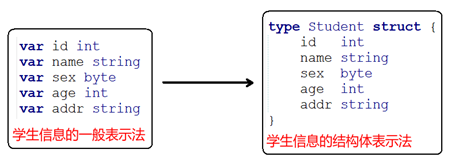

Go 语言结构体¶
Go 语言中数组可以存储同一类型的数据，但在结构体中我们可以为不同项定义不同的数据类型。
结构体是由一系列具有相同类型或不同类型的数据构成的数据集合。
结构体表示一项记录，比如保存图书馆的书籍记录，每本书有以下属性：
- Title ：标题
- Author ： 作者
- Subject：学科
- ID：书籍ID
结构体类型¶
有时我们需要将不同类型的数据组合成一个有机的整体，如：一个学生有学号/姓名/性别/年龄/地址等属性。显然单独定义以上变量比较繁琐，数据不便于管理。

结构体是一种聚合的数据类型，它是由一系列具有相同类型或不同类型的数据构成的数据集合。每个数据称为结构体的成员
定义结构体¶
结构体定义需要使用type和 struct语句。struct语句定义一个新的数据类型，结构体中有一个或多个成员。type 语句设定了结构体的名称。结构体的格式如下：
type struct_variable_type struct { member definition member definition ... member definition }
一旦定义了结构体类型，它就能用于变量的声明，语法格式如下：
variable_name := structure_variable_type {value1, value2...valuen} 或 variable_name := structure_variable_type { key1: value1, key2: value2..., keyn: valuen}
结构体的初始化¶
package main //必须有个main包 import "fmt" //定义一个结构体类型 type Student struct { id int name string sex byte //字符类型 age int addr string } func main() { //顺序初始化，每个成员必须初始化 var s1 Student = Student{1, "mike", 'm', 18, "bj"} fmt.Println("s1 = ", s1) //指定成员初始化，没有初始化的成员，自动赋值为0 s2 := Student{name: "mike", addr: "bj"} fmt.Println("s2 = ", s2) }
执行结果
s1 = {1 mike 109 18 bj} s2 = {0 mike 0 0 bj}
实例¶
package main import "fmt" type Books struct { title string author string subject string book_id int } //定义结构体 func main() { // 创建一个新的结构体 fmt.Println(Books{"Go 语言", "www.runoob.com", "Go 语言教程", 6495407})//这样写中间不要有空的 // 也可以使用 key => value 格式 fmt.Println(Books{title: "Go 语言", author: "www.runoob.com", subject: "Go 语言教程", book_id: 6495407}) // 忽略的字段为 0 或 空 fmt.Println(Books{title: "Go 语言", author: "www.runoob.com"}) }
输出结果为：
{Go 语言 www.runoob.com Go 语言教程 6495407} {Go 语言 www.runoob.com Go 语言教程 6495407} {Go 语言 www.runoob.com 0}
结构体指针变量初始化¶
package main //必须有个main包 import "fmt" //定义一个结构体类型 type Student struct { id int name string sex byte //字符类型 age int addr string } func main() { //顺序初始化，每个成员必须初始化, 别忘了& var p1 *Student = &Student{1, "mike", 'm', 18, "bj"} //p1是指针变量,student1的地址赋值给p1 fmt.Println("p1 = ", p1) //指定成员初始化，没有初始化的成员，自动赋值为0 p2 := &Student{name: "mike", addr: "bj"} fmt.Printf("p2 type is %T\n", p2) fmt.Println("p2 = ", p2) }
执行结果
p1 = &{1 mike 109 18 bj} p2 type is *main.Student p2 = &{0 mike 0 0 bj}
访问结构体成员¶
如果要访问结构体成员，需要使用点号 . 操作符，格式为：
结构体.成员名
结构体类型变量使用 struct 关键字定义，实例如下：
结构体成员的使用：普通变量¶
package main import "fmt" type Books struct { title string author string subject string book_id int }//定义结构体 func main() { var Book1 Books /* 声明 Book1 为 Books 类型 */ var Book2 Books /* 声明 Book2 为 Books 类型 */ /* book 1 描述 */ Book1.title = "Go 语言" //对其中的变量进行访问赋值,不赋值的为空 Book1.author = "www.runoob.com" Book1.subject = "Go 语言教程" Book1.book_id = 6495407 /* book 2 描述 */ Book2.title = "Python 教程" Book2.author = "www.runoob.com" Book2.subject = "Python 语言教程" Book2.book_id = 6495700 /* 打印 Book1 信息 */ fmt.Printf( "Book 1 title : %s\n", Book1.title) fmt.Printf( "Book 1 author : %s\n", Book1.author) fmt.Printf( "Book 1 subject : %s\n", Book1.subject) fmt.Printf( "Book 1 book_id : %d\n", Book1.book_id) /* 打印 Book2 信息 */ fmt.Printf( "Book 2 title : %s\n", Book2.title) fmt.Printf( "Book 2 author : %s\n", Book2.author) fmt.Printf( "Book 2 subject : %s\n", Book2.subject) fmt.Printf( "Book 2 book_id : %d\n", Book2.book_id) }
以上实例执行运行结果为：
Book 1 title : Go 语言 Book 1 author : www.runoob.com Book 1 subject : Go 语言教程 Book 1 book_id : 6495407 Book 2 title : Python 教程 Book 2 author : www.runoob.com Book 2 subject : Python 语言教程 Book 2 book_id : 6495700
结构体成员的使用：指针变量¶
package main //必须有个main包 import "fmt" //定义一个结构体类型 type Student struct { id int name string sex byte //字符类型 age int addr string } func main() { //1、指针有合法指向后，才操作成员 //先定义一个普通结构体变量 var s Student //在定义一个指针变量，保存s的地址 var p1 *Student p1 = &s //通过指针操作成员 p1.id 和(*p1).id完全等价，只能使用.运算符 p1.id = 1 (*p1).name = "mike" //*p1就是s p1.sex = 'm' p1.age = 18 p1.addr = "bj" fmt.Println("p1 = ", p1) //2、通过new申请一个结构体 p2 := new(Student) p2.id = 1 p2.name = "mike" p2.sex = 'm' p2.age = 18 p2.addr = "bj" fmt.Println("p2 = ", p2) }
执行结果
p1 = &{1 mike 109 18 bj} p2 = &{1 mike 109 18 bj}
结构体比较与赋值¶
如果结构体的全部成员都是可以比较的，那么结构体也是可以比较的，那样的话两个结构体将可以使用 == 或 != 运算符进行比较，但不支持 > 或 < 。
package main //必须有个main包 import "fmt" //定义一个结构体类型 type Student struct { id int name string sex byte //字符类型 age int addr string } func main() { s1 := Student{1, "mike", 'm', 18, "bj"} s2 := Student{1, "mike", 'm', 18, "bj"} s3 := Student{2, "mike", 'm', 18, "bj"} fmt.Println("s1 == s2 ", s1 == s2) fmt.Println("s1 == s3 ", s1 == s3) //同类型的2个结构体变量可以相互赋值 var tmp Student tmp = s3 fmt.Println("tmp = ", tmp) }
执行结果
s1 == s2 true s1 == s3 false tmp = {2 mike 109 18 bj}
结构体作为函数参数¶
你可以像其他数据类型一样将结构体类型作为参数传递给函数。并以以上实例的方式访问结构体变量：
实例¶
package main import "fmt" type Books struct { title string author string subject string book_id int } func main() { var Book1 Books /* 声明 Book1 为 Books 类型 */ var Book2 Books /* 声明 Book2 为 Books 类型 */ /* book 1 描述 */ Book1.title = "Go 语言" Book1.author = "www.runoob.com" Book1.subject = "Go 语言教程" Book1.book_id = 6495407 /* book 2 描述 */ Book2.title = "Python 教程" Book2.author = "www.runoob.com" Book2.subject = "Python 语言教程" Book2.book_id = 6495700 /* 打印 Book1 信息 */ printBook(Book1) /* 打印 Book2 信息 */ printBook(Book2) } func printBook( book Books ) { //变量名 类型(参数) fmt.Printf( "Book title : %s\n", book.title) fmt.Printf( "Book author : %s\n", book.author) fmt.Printf( "Book subject : %s\n", book.subject) fmt.Printf( "Book book_id : %d\n", book.book_id) }
以上实例执行运行结果为：
Book title : Go 语言 Book author : www.runoob.com Book subject : Go 语言教程 Book book_id : 6495407 Book title : Python 教程 Book author : www.runoob.com Book subject : Python 语言教程 Book book_id : 6495700
结构体指针¶
你可以定义指向结构体的指针,类似于其他指针变量，格式如下：
var struct_pointer *Books //struct_pointer 定义为结构体指针变量
以上定义的指针变量可以存储结构体变量的地址。查看结构体变量地址，可以将 & 符号放置于结构体变量前：
struct_pointer = &Book1 //给指针变量赋地址值
使用结构体指针访问结构体成员，使用 "." 操作符：
struct_pointer.titlego //结构体指针访问成员
接下来让我们使用结构体指针重写以上实例，代码如下：
实例¶
package main import "fmt" type Books struct { title string author string subject string book_id int } func main() { var Book1 Books /* Declare Book1 of type Book */ var Book2 Books /* Declare Book2 of type Book */ /* book 1 描述 */ Book1.title = "Go 语言" Book1.author = "www.runoob.com" Book1.subject = "Go 语言教程" Book1.book_id = 6495407 /* book 2 描述 */ Book2.title = "Python 教程" Book2.author = "www.runoob.com" Book2.subject = "Python 语言教程" Book2.book_id = 6495700 /* 打印 Book1 信息 */ printBook(&Book1)//传递进去的是地址(指针变量保存的就是地址) /* 打印 Book2 信息 */ printBook(&Book2) } func printBook( book *Books ) { //定义的是指针变量 fmt.Printf( "Book title : %s\n", book.title)//指针变量直接可以使用.调用成员 fmt.Printf( "Book author : %s\n", book.author) fmt.Printf( "Book subject : %s\n", book.subject) fmt.Printf( "Book book_id : %d\n", book.book_id) }
以上实例执行运行结果为：
Book title : Go 语言 Book author : www.runoob.com Book subject : Go 语言教程 Book book_id : 6495407 Book title : Python 教程 Book author : www.runoob.com Book subject : Python 语言教程 Book book_id : 6495700
可见性¶
Go语言对关键字的增加非常吝啬，其中没有private、 protected、 public这样的关键字。
要使某个符号对其他包（package）可见（即可以访问），需要将该符号定义为以大写字母
开头。
目录结构：

test.go示例代码如下：
package test import "fmt" //如果首字母是小写，只能在同一个包里使用 type stu struct { id int } type Stu struct { //id int //如果首字母是小写，只能在同一个包里使用 Id int } //如果首字母是小写，只能在同一个包里使用 func myFunc() { fmt.Println("this is myFunc") } func MyFunc() { fmt.Println("this is MyFunc -=======") }
main.go示例代码如下：
package main //必须有个main包 import "test" import "fmt" func main() { //包名.函数名 test.MyFunc() //包名.结构体里类型名 var s test.Stu s.Id = 666 fmt.Println("s = ", s) }
执行结果
this is MyFunc -======= s = {666}
笔记¶
- 结构体是作为参数的值传递：
package main import "fmt" type Books struct { title string author string subject string book_id int } func changeBook(book Books) { book.title = "book1_change" } func main() { var book1 Books book1.title = "book1" book1.author = "zuozhe" book1.book_id = 1 changeBook(book1) fmt.Println(book1) }
结果为：
{book1 zuozhe 1} //值传递不改变其中的成员变量
如果想在函数里面改变结果体数据内容，需要传入指针：
package main import "fmt" type Books struct { title string author string subject string book_id int } func changeBook(book *Books) { book.title = "book1_change" //地址调用直接改变成员变量 } func main() { var book1 Books book1.title = "book1" book1.author = "zuozhe" book1.book_id = 1 changeBook(&book1) fmt.Println(book1) }
结果为：
{book1_change zuozhe 1}
- struct 类似于 python 中的类，可以在 struct 中定义成员变量。
要访问成员变量，可以有两种方式：
- 1.通过 struct 变量.成员 变量来访问。
-
2.通过 struct 指针.成员 变量来访问。
-
不需要通过 getter, setter 来设置访问权限。
type Rect struct{ //定义矩形类 x,y float64 //类型只包含属性，并没有方法 width,height float64 } func (r *Rect) Area() float64{ //为Rect类型绑定Area的方法，*Rect为指针引用可以修改传入参数的值 return r.width*r.height //方法归属于类型，不归属于具体的对象，声明该类型的对象即可调用该类型的方法 }